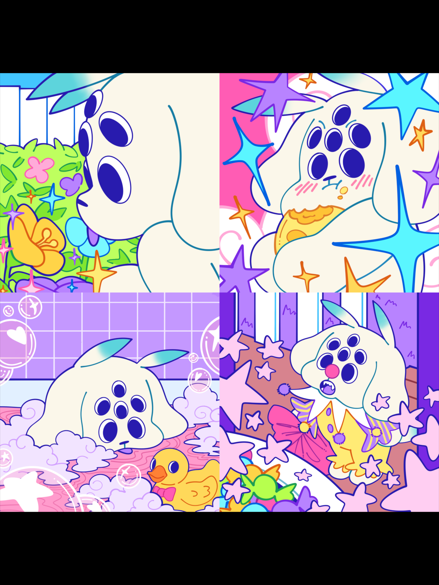
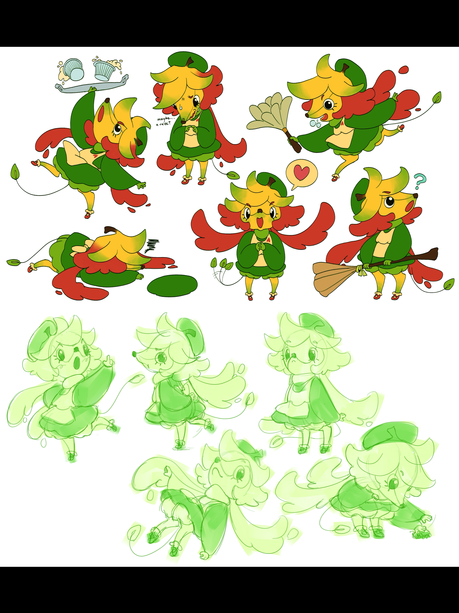
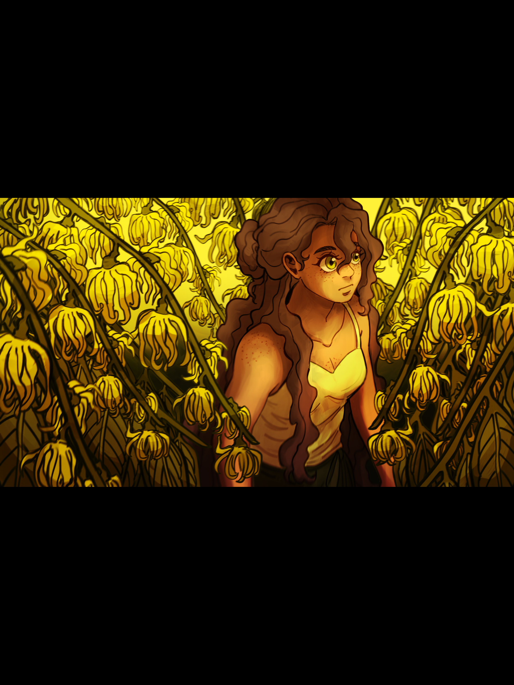
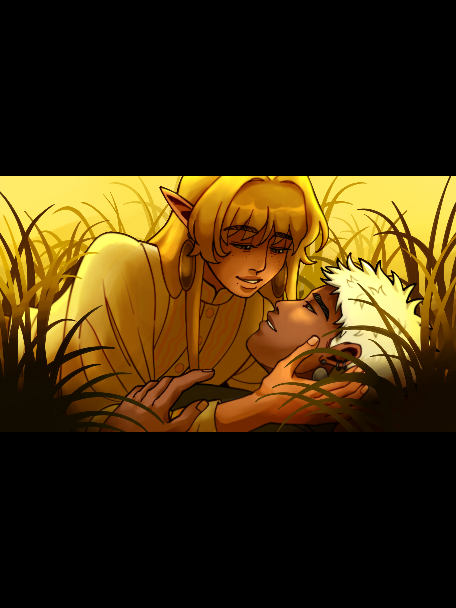
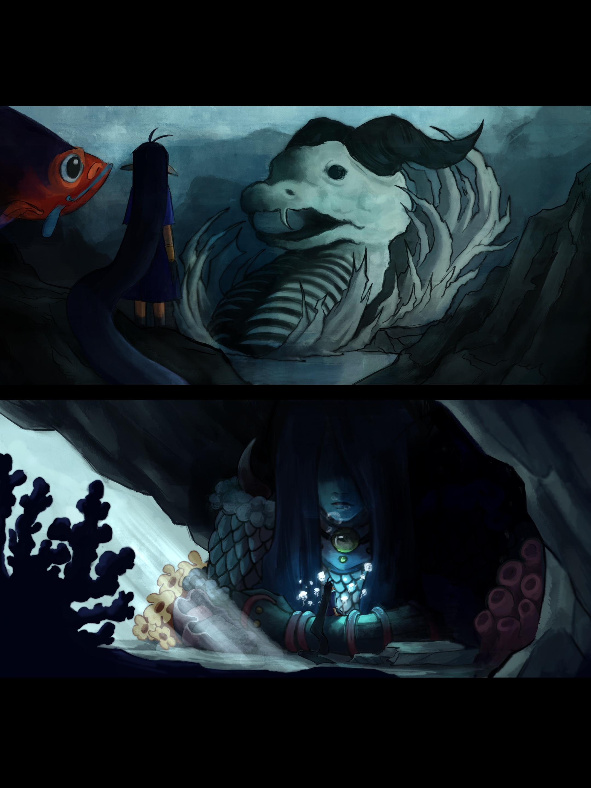
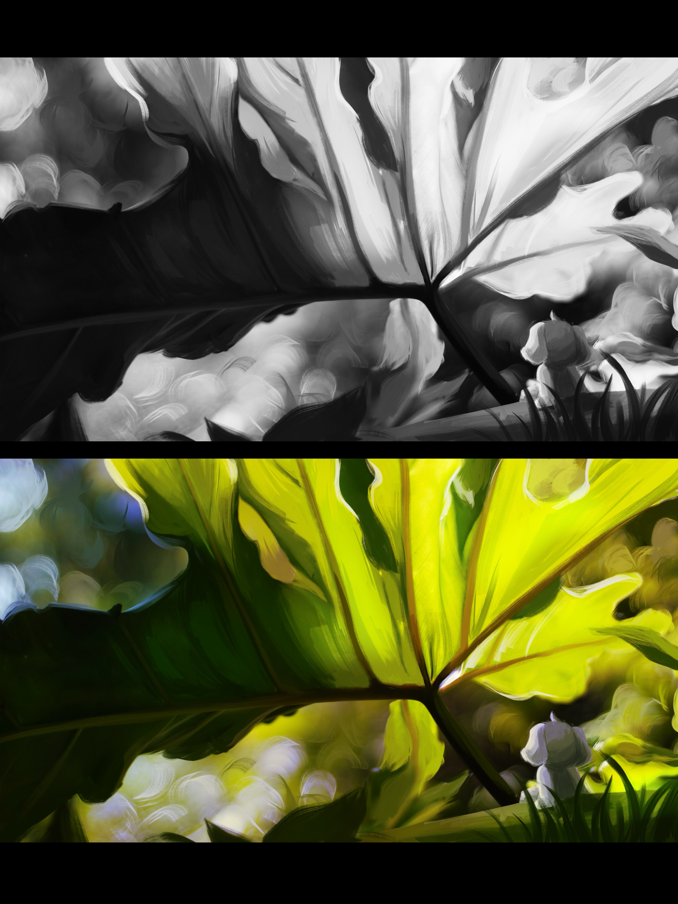
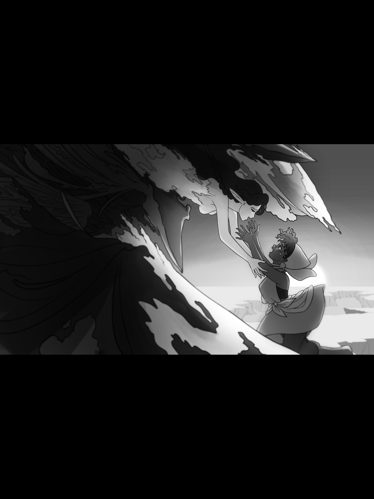
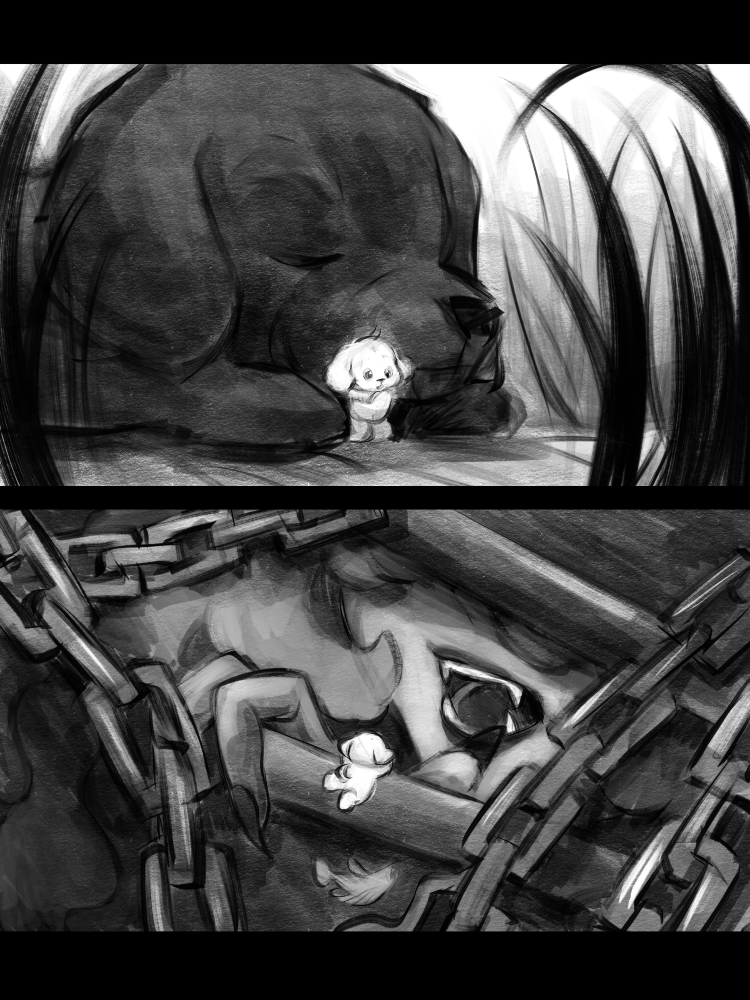

Aeri Biter - Ang Bakunawa
hey heyy i’m aeri!! i’m a 2d animator/designer/filmmaker with a knack for all things silly, whimsical, and fantastical.
in all of my works, i always try to incorporate aspects of my filipino culture, heritage, and upbringing into each character, environment, and story i create.
eventually, i want my art to become a vast tapestry of worlds interwoven by filipino folklore and mythology.
since i was a kid, i have always wanted to write and direct my own films simply because i love telling stories. i spent a lot my childhood researching the most obscure of fairytales and mythologies, especially those from my own culture. as i got older, i realized that the best stories i could tell are the ones from my own life shown from that untapped lens of imagination. i want to create more short films that encompass that feeling and i hope i get to share more of those stories in the years to come.
bye byee for now!! there’s a seventh moon waiting for me!! 🌕✨







